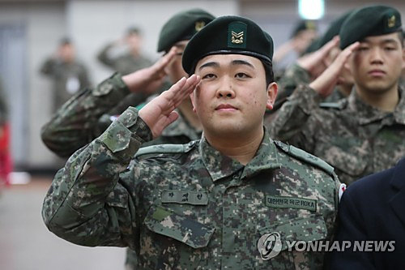

육군은 하 중사가 전역할 당시 '전상' 판정을 내렸지만, 보훈심사위는 지난달 초 유공자법에 관련 조항이 없다는 이유를 들어 '공상(公傷)' 판정을 내려 논란이 일었다. '전상'은 적과의 교전 등 전투에서 입은 상이를 뜻하지만, '공상'은 교육·훈련 또는 그 밖의 공무수행 등의 과정에서 생긴 상이를 의미한다. 보훈처는 논란이 일자 "하 중사가 이의를 제기해 재심의가 이뤄지고 있다"며 "재심의 과정에서는 기존 국가유공자법 시행령을 탄력적으로 검토해 깊이 있게 논의하겠다"는 입장을 밝힌 바 있다. 박삼득 처장은 이날 "이번 재심의에서는 최초 심의 때 법령 조문을 문자 그대로 경직되게 해석했던 부분에 대해 폭넓은 법률자문을 받아 그 의견이 반영됐다"며"보훈처는 이번 하 중사 심의를 계기로 관련 시행령 개정은 물론 보훈심사위원 구성 개편, 그리고 국가보훈체계를 정비해나가겠다"고 말했다.

또 같은 사례가 재발하지 않도록 국가유공자법 시행령을 먼저 정비하고 보훈심사위 구성도 현재의 '의학, 법률전문가' 중심의 인력풀에서 사회 각계의 다양한 의견이 반영될 수 있도록 확대하겠다고 설명했다. 국가보훈법령 전반에 대한 개정 필요성도 국방부 등 관계기관과 협의해나가겠다는 방침도 피력했다. 박 처장은 "결국 (보훈심사 과정에서) 가장 저변에 있는 것은 국민의 눈높이라고 본다. (기준은) 불변이 아니라 시대 환경에 따라 점차 바뀌고 세분화되는 것"이라며 "시행령 개정을 잘했었다면 이런 혼란이 조성되지 않았을 것"이라고 아쉬워했다. 박 처장은 "마음의 상처를 입은 하재헌 중사와 가족분들께 싶은 위로의 말씀을 드린다"고 전했다.